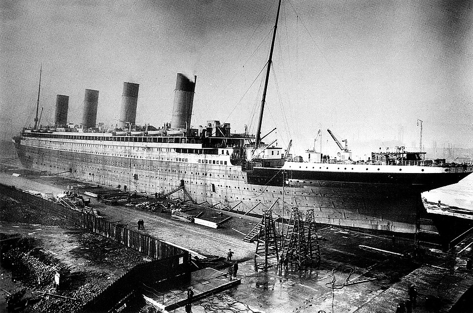

Construction of the Titanic
The RMS Titanic was built in Belfast, Northern Ireland, by the shipbuilding company Harland and Wolff for the White Star Line. Construction began in 1909, and the ship was launched into the water in 1911. At the time, Titanic was one of the largest and most impressive passenger ships in the world. It was designed to carry people across the Atlantic Ocean in comfort and style.
Titanic had three passenger classes. First-class passengers could enjoy luxurious rooms, elegant dining areas, and many other expensive facilities. Second-class accommodation was also considered very comfortable, while third-class passengers had simpler rooms. Many third-class passengers were immigrants traveling to the United States in search of a new life.
The ship was considered very advanced for its time. It had watertight compartments that were designed to help keep the ship afloat if part of the hull was damaged. This advanced design gave many people great confidence in the ship before its first voyage.

The Maiden Voyage
Titanic began its maiden voyage on April 10, 1912. It left Southampton, England, and was supposed to cross the Atlantic Ocean and arrive in New York City. Before heading across the Atlantic, the ship stopped at Cherbourg in France and Queenstown in Ireland, which is now called Cobh. More passengers boarded the ship during these stops.
The Route of the Titanic Begins in Southampton
There were more than two thousand passengers and crew members on board. They came from different countries and social classes. Some passengers were wealthy businessmen and families, while others were immigrants hoping to begin a new life in America.
During the first days of the voyage, the journey was mostly calm. Titanic traveled west across the North Atlantic toward New York. However, as the ship entered an area where ice had been reported, several warnings about icebergs were received by radio.
The Collision
On the night of April 14, 1912, Titanic continued sailing through the North Atlantic. The sea was very calm, which made it more difficult for the lookouts to notice ice in the distance. At about 11:40 p.m., a lookout saw an iceberg directly ahead of the ship and immediately warned the bridge.
The crew tried to turn the ship away from the iceberg, but there was not enough time. Titanic struck the iceberg along its right side. The collision damaged several sections of the hull and allowed seawater to enter a number of the ship's watertight compartments.
After examining the damage, the ship's designers and officers realized that Titanic could not remain afloat. The crew began preparing the lifeboats and sending distress messages to other ships. During the early hours of April 15, the front of the ship sank deeper into the water. Eventually, Titanic broke apart and disappeared beneath the surface of the Atlantic Ocean.